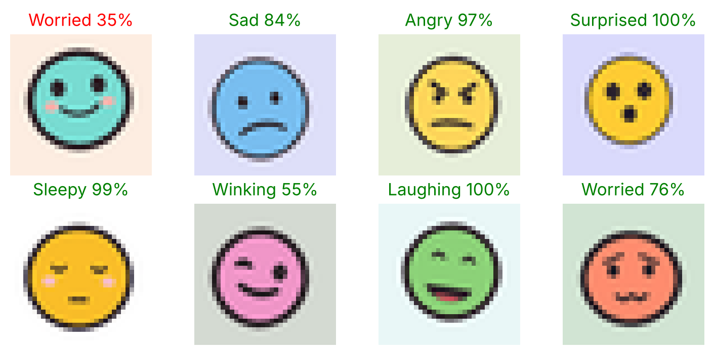
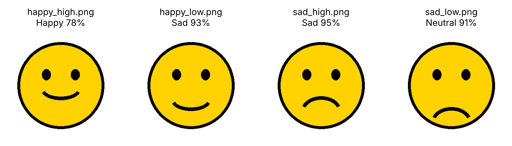

A short introduction. Each section below has its own video: the idea first, then the matching notebook steps. Captions are built in.
By the end of today you can:
- load a saved model and use it on new pictures
- find which moods fool the Mood Machine, and suggest why
- explain what the Mood Machine has learned, and why it fails on some faces
- discuss whether machines should read real people's emotions
Do this first
Put session10-starter.ipynb and the four drawings in the same folder as mood_machine.pth from Session 8. Run the first cell straight away. It loads your saved Mood Machine. If it can't find the file, it trains a new one, which takes a few minutes.
Read Brand-New Faces
The saved file only holds numbers: the 820,874 weights and biases. It doesn't hold the design of the network. So the notebook first builds an empty MoodNet, then loads the saved numbers into it.
read_mood takes any picture, gets it ready, and returns the mood the Mood Machine thinks it shows and how sure it is:
def read_mood(model, picture):
x = get_ready(picture).unsqueeze(0).to(device) # a batch of one face
with torch.no_grad():
chances = torch.softmax(model(x), dim=1)[0] # scores -> chances
best = chances.argmax().item()
return CLASSES[best], chances[best].item()
unsqueeze(0) turns one face into a batch of one, because MoodNet always expects a batch.
In your notebook
Run section 1. It reads eight faces from seed 5,000,000 upwards. No one has used these seeds before, so they're new to the Mood Machine. Right answers are in green, wrong ones in red.

Which Moods Fool It?
The overall score hides a lot. Section 2 marks every mood separately and lists the mix-ups it makes most often.
In your notebook
Predict first: which mood do you think it finds hardest? Then run section 2.
Happy 45 % Sad 78 % Angry 90 % Surprised 99 % Sleepy 100 % Winking 79 % Laughing 100 % Worried 97 % Cool 99 % Neutral 80 % Most common mix-ups: Happy read as Winking 119 times Sad read as Neutral 43 times Happy read as Neutral 38 times
Think
Look at a Happy face and a Winking face from Session 2. Why do you think the Mood Machine mixes them up so often? Why are Sleepy and Laughing so easy?
One explanation
Happy and Winking faces have the same smile. The only difference is one eye, which is a handful of pixels out of 3,072. Sleepy and Laughing faces have big features that look like no other mood, so lots of pixels point the same way.
Draw Your Own Faces
So far every test face was drawn by the same program as the training faces. Now you test it with faces drawn by a person.
Start with the four test drawings. They are simple yellow faces, the same in every way except the mouth. Two smile and two frown. In each pair, one mouth sits higher on the face and one sits lower.
In your notebook
Predict what the Mood Machine will say for each of the four drawings. Write your predictions down. Then run section 3.

The two smiles are the same shape. Moving the smile down the face turned "Happy, 78%" into "Sad, 93%".
Now draw your own. Each pair works as an experiment: change one thing and see whether the Mood Machine changes its mind.
- Open Paint. Press Ctrl + W to open Resize and skew, choose Pixels, untick Maintain aspect ratio, and set the size to 320 by 320. A square canvas stops the face being squashed when it's shrunk.
- Fill the background with a colour, then draw a large circle for the face and fill it.
- Add eyes and a mouth with a thick brush. The picture gets shrunk to 32 by 32, so thin lines vanish.
- Choose Save as, then PNG picture. Save it in your mood-machine folder with a name like
my_happy.png. - Add the name to
my_drawingsin the YOUR TURN cell and run it.
Ideas to test, one at a time:
- the same face with the mouth higher, then lower
- a bigger smile, then a smaller one
- a white face, a green face, a face with no outline
- a face that fills the whole canvas, then a small face in one corner
- an angry face with eyebrows, then the same face with the eyebrows rubbed out
Record
Keep a table: what you changed, what the Mood Machine said, how sure it was, and whether that matched what you expected. Compare with the people next to you. Did anyone find a change that always fools it?
Key idea: what has it learned?
The Mood Machine doesn't know what a smile is. It has never been told that faces have mouths. All it sees is 3,072 numbers, and it has learned which numbers, in which positions, tend to go with each mood. Move the mouth to a place where the training faces never had one, and those patterns no longer match.
Upside Down
In your notebook
Predict first: what accuracy will the Mood Machine get on the test faces turned upside down? Write it down, then run section 4.
What we got
86.7% upright, 11.8% upside down: no better than guessing. You can read an upside-down smile easily. The Mood Machine can't, because every pixel has moved.
This is true of machine learning in general: a model is only reliable on data like the data it learned from. A self-driving system trained only in sunny weather, or a medical model trained on one hospital's scanner, can fail in the same way.
Should Machines Read Real Emotions?
The Mood Machine reads cartoon moods. Real emotion recognition systems claim to read people's feelings from their faces, voices or body language. Companies have sold them for job interviews, watching students in class, and monitoring staff at work.
The EU AI Act bans AI that infers people's emotions in workplaces and schools, except for medical or safety reasons. The ban has applied across the EU since 2 February 2025. There are two main worries. First, the school or employer has power over the person being watched. Second, scientists don't agree that a face reliably shows what someone feels.
Discuss
- Your Mood Machine failed on faces unlike its training faces. What might happen to a real system trained mostly on one group of people's faces?
- Each cartoon face was drawn to show exactly one mood. Is a real face like that?
- Outside work and school, emotion recognition is allowed but treated as high-risk. Think of one use you'd accept and one you wouldn't. What's the difference?